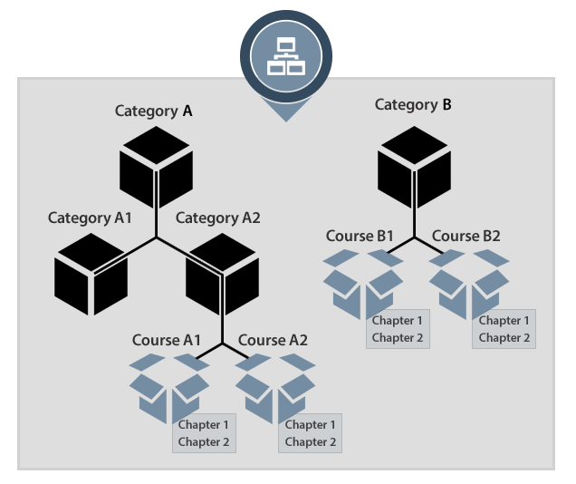

Overview
This is actually pretty simple, so we’ll try to make this a quick read. As we have talked about before, the “Course” is the on/off building block of what users see (vs Categories, or Chapters).
A Course is contained within a Category, and Categories can be nested inside of each other (essentially sub-categories) and then Chapters are what make up a Course. Here is a simple diagram:

So in this example, a user will first see:
Category A and Category B
If category A is clicked, they will then see:
Category A-1 and Category A-2
Then if Category A-2 is clicked, they will see the courses within it, which are:
Course A1 and Course A2
If Category B is clicked, they will simply see:
Course B1 and Course B2
Then as you can see, Chapters are contained within a Course.
Tip
The top level of Categories used to be called “Topics” but we have updated this so that you can nest Categories as you wish, and they also respond to the end user’s content provisioning - meaning that they will only see the Categories that they have Courses within them - vs in the prior “Topics” functionality, the users would see, “Oops - you don't have any content here.”
You will see in the next section of these Help Docs where you specify what “type” of Category you want, whether it will contain Courses, or whether it will link to another list of Categories.
One other important note to make is, now that you can nest, and re-nest Categories as deep as you want, there is a setting to specify is what “list” of Categories your users will see upon first clicking into the Training Center, as this can also be changed per “Theme.” We will cover that in the next section as well, and our Client Care team can help you with this as well, as this is often a “set it and forget it” type of a setting.